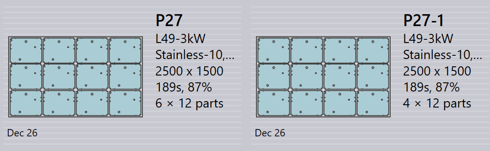

Layoutpanel
Detta avsnitt förklarar layoutrelaterade åtgärder såsom Skicka till maskin…, Hämta om från maskin…, Exportera utdata, Markera slutförd…, Lägg till detaljer…, Anpassa/kompakt…, Dela layouter… och andra alternativ som används för att hantera layoutinstanser.

|
|


Skicka till maskin…
-
När en häck är klar (fylld eller brådskande behövd) kan ni skicka den till maskinen.
-
Högerklicka på häcken och välj Skicka till maskin….
-
En mapp skapas automatiskt, namngiven efter häcken.
-
Utdatafiler (fxlyt, NC, rapport, csv) exporteras till JOBB- utdataplatsen.
-
Send to machine-häckar visas med en blå bock.

| När de väl har släppts försöks dessa häckar inte längre ompackas igen. |
Hämta om från maskin…
-
Om utdata behöver validering eller en uppdatering (till exempel lägga till fler delar):
-
Högerklicka på den exporterade layouten.
-
Välj Hämta om från maskin….
-
-
Utdatafilerna och mappen (fxlyt, NC, rapport, csv) tas bort.
-
Häcken blir redigerbar igen.
-
Ni kan göra ändringar och skicka den till maskinen igen.

Exportera utdata
-
Högerklicka på valfri layout (häck) som har skickats till maskinen och klicka på Exportera utdata.

-
Alternativet Export Outputs exporterar NC-, rapport- och layoutfilerna till de respektive maskinutdatamapparna.
-
Detta alternativ regenererar NC-filen med aktuella enhetsinställningar för layouten.
| Export Outputs är inte tillgängligt för layouter som är färdiga och layouter som väntar i kö för ompackning. |
Mark complete
-
När häcken har bearbetats på maskinen högerklickar ni på häcken och väljer Markera slutförd….
-
Ni kan välja flera häckar och markera dem som färdiga samtidigt.
-
När en häck markeras som färdig:
-
Den gråmarkeras, flyttas till slutet av listan och visas med en grön bock.
-
Layouten tas bort från listan över aktiva layouter.
-
Del- och jobbstatus uppdateras och bearbetade kvantiteter flyttas till färdigt tillstånd.
-
Utdatafiler för den layouten tas bort från maskinutdataplatsen för att undvika dubbelanvändning.

-
Lägg till detaljer…

-
Använd detta alternativ för att lägga till fler delar till en relativt dåligt packad layout. Liksom interaktiv häckning är detta ett guidestyrt alternativ och kan användas på en enskild eller flera layouter samtidigt.
-
TruSmartCAM monterar layoutompackningsguiden i huvudarbetsområdet när detta alternativ används. Håll ned tangenten Ctrl och välj en eller flera delar som ska packas på layout(er)na och tryck på Nästa.

-
De valda delarna visas i nästa steg med en redigerbar kvantitetskolumn. Uppdatera delkvantiteterna om det behövs i fältet Update Qty. Klicka på Nästa för att fortsätta till häckningen. Observera att kvantiteter endast kan ökas, inte minskas.

-
Alla layouter häckas separat och häckningsresultaten visas med de nypackade delarna placerade på dem. Att välja layouten visar alla befintliga layoutdelar. Resultatet kasseras automatiskt om ingen ny del placeras under ompackningen. En layout med flera kopior kan resultera i olika mönster efter ompackningen.

Anpassa/kompakt…
-
Detta guidbaserade kommando kan användas för att anpassa en layout från en maskin till en annan när originalmaskinen är nere eller när maskinens arbetsbelastning behöver balanseras.

-
Det kan användas när arket som planerats för är slut på lager och layouten behöver omplaneras på ett annat tillgängligt ark.
-
Ni kan slå samman layouter packade på mindre ark till större ark för att använda material mer effektivt.
-
Ni kan dela layouter packade på större ark till mindre ark om stora arklager inte är tillgängliga.
-
Ni kan förbättra packningseffektiviteten för flera layouter (även från olika maskiner) genom att slå samman dem.
-
För att använda det väljer ni en eller flera layouter och klickar på Anpassa/kompakt… för att öppna guiden i arbetsområdet.

-
Den vänstra panelen visar alla valda layouter och delpanelen visar layoutdelarna.

-
Välj målmaskin och arkmaterial och klicka sedan på Nästa för att utföra omhäckningen.
-
De nya häckresultaten visas i resultatpanelen.

-
Klicka på Nästa för att spara den anpassade eller kompakterade layouten.

Dela en layout
Alternativet Dela layouter… gör att ni kan dela en befintlig layout i flera layouter genom att ändra kvantiteter, utan att behöva göra om verktygsutrustning eller häckning.
Denna funktion är särskilt användbar i följande scenarier:
-
När ni behöver producera en del av den totala kvantiteten omedelbart samtidigt som ni schemalägger återstående kvantitet för senare produktion.
-
När produktionskrav behöver distribueras över flera skift eller dagar för att optimera arbetsflöde och resursutnyttjande.
-
När en specifik maskin är tillfälligt otillgänglig eller upptagen och ni behöver justera layouten för att anpassa den till aktuella produktionsbegränsningar.
För att dela en layout utför ni följande steg:
-
I vyn Layouter väljer ni den önskade layouten.

-
Klicka på Dela layouter….

-
Ange det önskade värdet i Nya kopior.

-
Klicka på OK.

Den valda layouten är nu delad i två layouter med justerade kvantiteter.